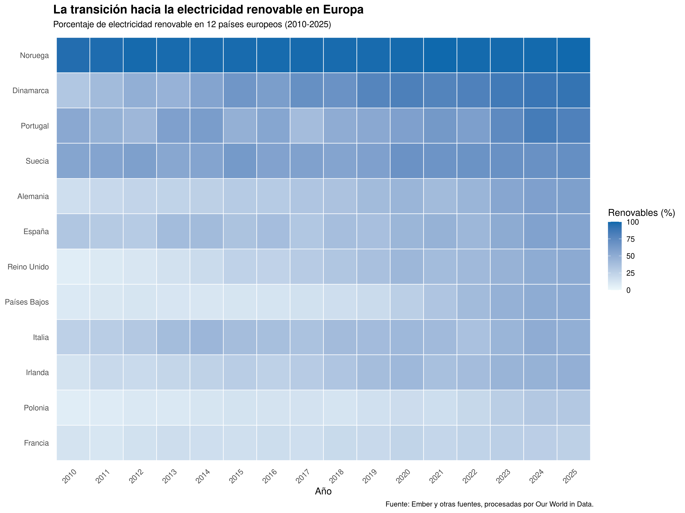
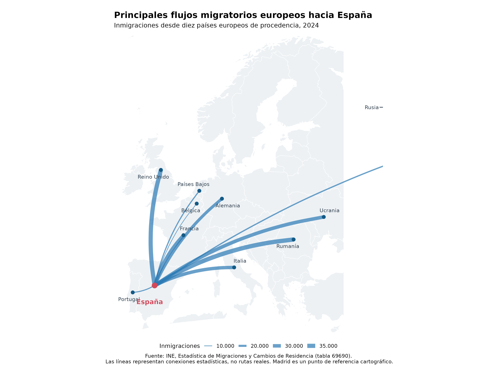
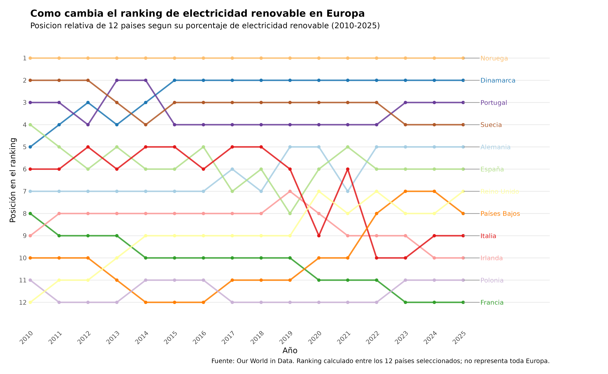

Introducción
Este proyecto ha sido realizado por Víctor Sánchez Fuentes para la PEC2 de Visualización de Datos del Máster Ingeniería Informática de la uoc.
Este proyecto presenta tres técnicas de visualización de datos aplicadas a conjuntos de datos abiertos.
El objetivo es explorar las características de cada técnica y explicar su adecuación a diferentes estructuras de datos y fuerzas y debilidades.
Las visualizaciones se han elaborado utilizando R y diversas librerías de análisis y representación gráfica.
Técnica 1 · Heatmap
La transición hacia la electricidad renovable en Europa
Este mapa de calor representa la evolución del porcentaje de electricidad renovable en doce países europeos entre 2010 y 2025.

Objetivo: identificar patrones temporales y diferencias entre países mediante la intensidad del color.
Fuente: Our World in Data .
Técnica 2 · Flow Map
Principales flujos migratorios europeos hacia España
El mapa representa las inmigraciones hacia España procedentes de diez países europeos identificados individualmente en los datos del INE durante 2024.

Objetivo: visualizar las conexiones geográficas entre países de procedencia y España, comparando la magnitud de los flujos.
Las líneas representan relaciones estadísticas, no rutas reales de viaje.
Fuente: Instituto Nacional de Estadística . Estadística de Migraciones y Cambios de Residencia.
Técnica 3 · Bump Chart
Cómo cambia el ranking de electricidad renovable en Europa
Este gráfico representa la evolución de las posiciones relativas de doce países europeos según su porcentaje de electricidad renovable entre 2010 y 2025.

Objetivo: identificar cambios de liderazgo, ascensos, descensos y estabilidad en las posiciones del ranking.
Las posiciones son relativas al conjunto de doce países y no representan una clasificación de toda Europa.
Fuente: Our World in Data .
Referencias académicas
Bibliografía y recursos utilizados
Para la realización de esta actividad se han utilizado fuentes de datos abiertos, bibliografía especializada en visualización de datos y documentación técnica de R.
1. Fundamentos de visualización de datos
- Munzner, T. (2014). Visualization analysis and design. CRC Press. https://doi.org/10.1201/b17511 . Capítulos 2, "What: Data Abstraction", y 5, "Marks and Channels".
- Schwabish, J. A. (2021). Better data visualizations: A guide for scholars, researchers, and wonks. Columbia University Press. Parte II, capítulos 4-9.
- Wickham, H. (2010). A layered grammar of graphics. Journal of Computational and Graphical Statistics, 19(1), 3-28. https://doi.org/10.1198/jcgs.2009.07098 .
2. Fuentes de datos abiertos y cartografía
A continuación se indican los conjuntos de datos empleados, sus organismos responsables y las visualizaciones en las que se han utilizado.
-
Heatmap y Bump Chart.
Our World in Data. (s. f.). Share of electricity generation from renewables [Conjunto de datos]. Global Change Data Lab. Datos procedentes de Ember y otras fuentes, procesados por Our World in Data.
Periodo analizado: 2010-2025.
Ámbito: doce países europeos.
Variable: porcentaje de electricidad generada a partir de fuentes renovables.
Consulta de datos: Our World in Data - Electricity mix .
Visualizaciones: Heatmap (comparación de porcentajes) y Bump Chart (evolución del ranking). -
Flow Map - Datos migratorios.
Instituto Nacional de Estadística. (s. f.). Inmigraciones procedentes del extranjero por año, sexo, país de procedencia y nacionalidad (española/extranjera). Estadística de Migraciones y Cambios de Residencia [Conjunto de datos, tabla 69690].
Periodo analizado: 2024.
Variable: número de inmigraciones hacia España por país de procedencia.
Ficha en el Catálogo Nacional de Datos Abiertos: datos.gob.es - Tabla 69690 del INE .
Descarga directa del CSV: Archivo CSV del INE .
Visualización: Flow Map (flujos migratorios hacia España). -
Flow Map - Base cartográfica.
Natural Earth. (s. f.). Natural Earth: Free vector and raster map data [Datos cartográficos].
Uso: representación de los límites geográficos de los países europeos.
Consulta: Natural Earth .
Acceso desde R: paquete rnaturalearth.
Visualización: Flow Map.
3. Documentación de R y librerías
- R Core Team. (2026). R: A language and environment for statistical computing. R Foundation for Statistical Computing. https://www.r-project.org/ .
4. Publicación de las visualizaciones
- GitHub. (s. f.). GitHub Pages documentation. https://docs.github.com/en/pages . Documentación para la publicación de la página web estática.
5. Notas metodológicas
Los datos de electricidad renovable se han utilizado para dos objetivos diferentes: comparar porcentajes mediante un Heatmap y estudiar posiciones relativas mediante un Bump Chart.
Para el Flow Map se han seleccionado países europeos identificados individualmente en los datos del INE. Las conexiones representan volúmenes estadísticos y no trayectos reales.
Las visualizaciones se han elaborado con R y se han publicado como imágenes PNG en una página web estática desarrollada con HTML5 y CSS3.
Se ha utilizado ChatGPT como herramienta de apoyo y debug, especialmente para la generación de la bibliografía.